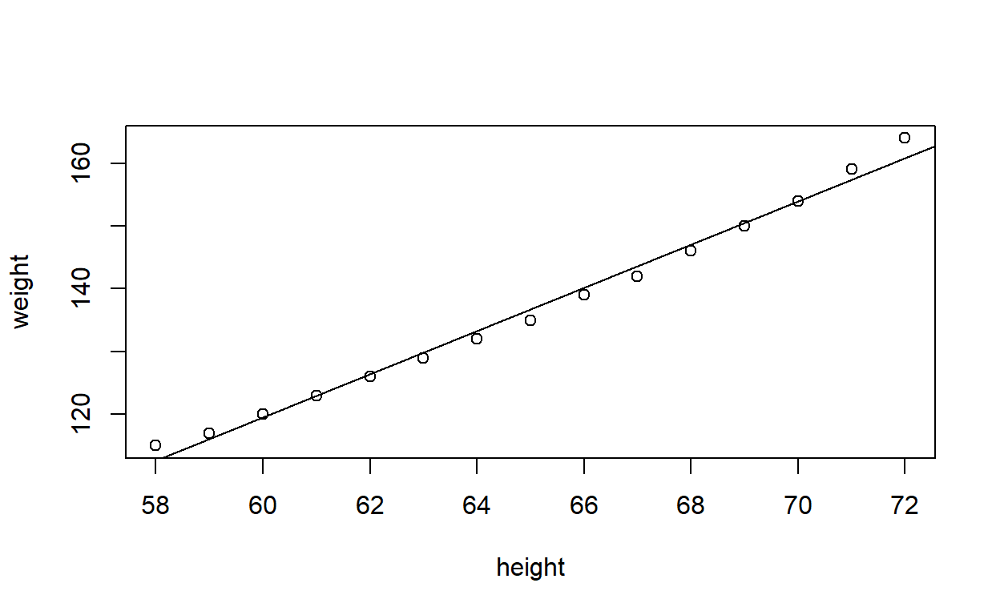
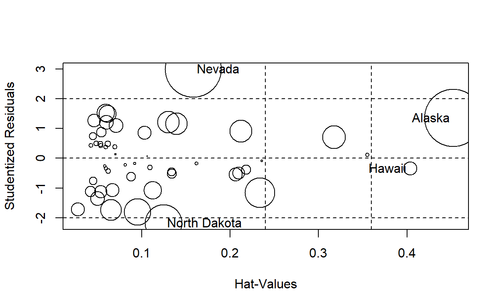
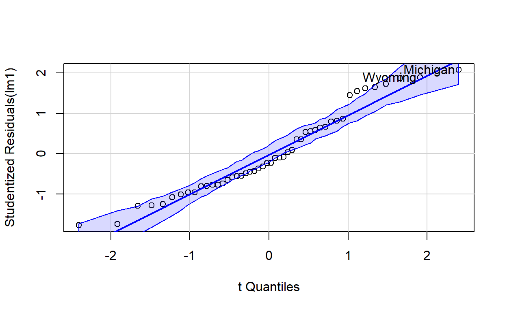
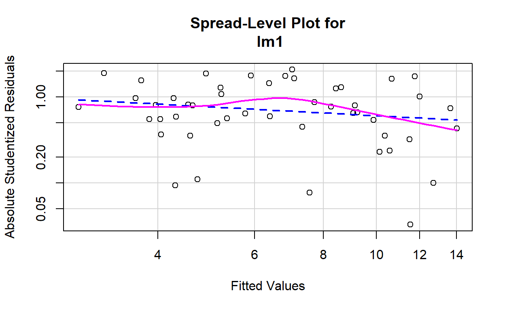
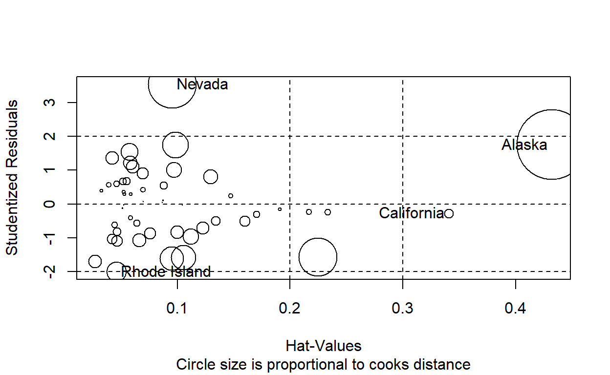

R Markdown
This is an R Markdown document. Markdown is a simple formatting syntax for authoring HTML, PDF, and MS Word documents. For more details on using R Markdown see http://rmarkdown.rstudio.com.
When you click the Knit button a document will be generated that includes both content as well as the output of any embedded R code chunks within the document. You can embed an R code chunk like this:
1 2 3 4 5 6 7
112.5833 116.0333 119.4833 122.9333 126.3833 129.8333 133.2833
8 9 10 11 12 13 14
136.7333 140.1833 143.6333 147.0833 150.5333 153.9833 157.4333
15
160.8833 weight
[1] 115 117 120 123 126 129 132 135 139 142 146 150 154 159 164#Residuals are differences from observed values from mean values (fitted values)
residuals(lm1)
1 2 3 4 5
2.41666667 0.96666667 0.51666667 0.06666667 -0.38333333
6 7 8 9 10
-0.83333333 -1.28333333 -1.73333333 -1.18333333 -1.63333333
11 12 13 14 15
-1.08333333 -0.53333333 0.01666667 1.56666667 3.11666667 1 2 3 4 5 6 7 8 9 10 11 12 13 14 15
115 117 120 123 126 129 132 135 139 142 146 150 154 159 164 weight == a
1 2 3 4 5 6 7 8 9 10 11 12 13 14
TRUE TRUE TRUE TRUE TRUE TRUE TRUE TRUE TRUE TRUE TRUE TRUE TRUE TRUE
15
TRUE 
Call:
lm(formula = weight ~ height)
Residuals:
Min 1Q Median 3Q Max
-1.7333 -1.1333 -0.3833 0.7417 3.1167
Coefficients:
Estimate Std. Error t value Pr(>|t|)
(Intercept) -87.51667 5.93694 -14.74 1.71e-09 ***
height 3.45000 0.09114 37.85 1.09e-14 ***
---
Signif. codes: 0 '***' 0.001 '**' 0.01 '*' 0.05 '.' 0.1 ' ' 1
Residual standard error: 1.525 on 13 degrees of freedom
Multiple R-squared: 0.991, Adjusted R-squared: 0.9903
F-statistic: 1433 on 1 and 13 DF, p-value: 1.091e-14#The Residual Standard error 1.525 lbs can be thought of as average error in predicting weight from height
Quadratic regression
# F Statics ....
lm2 <- lm(weight ~ height + I(height^2)) #Quadratic regression
plot(height,weight);
lines(height, fitted(lm2),lty=2)

summary(lm2)
Call:
lm(formula = weight ~ height + I(height^2))
Residuals:
Min 1Q Median 3Q Max
-0.50941 -0.29611 -0.00941 0.28615 0.59706
Coefficients:
Estimate Std. Error t value Pr(>|t|)
(Intercept) 261.87818 25.19677 10.393 2.36e-07 ***
height -7.34832 0.77769 -9.449 6.58e-07 ***
I(height^2) 0.08306 0.00598 13.891 9.32e-09 ***
---
Signif. codes: 0 '***' 0.001 '**' 0.01 '*' 0.05 '.' 0.1 ' ' 1
Residual standard error: 0.3841 on 12 degrees of freedom
Multiple R-squared: 0.9995, Adjusted R-squared: 0.9994
F-statistic: 1.139e+04 on 2 and 12 DF, p-value: < 2.2e-16 2 3 4 5 6 7 8
2.370168 2.536296 2.702424 2.868552 3.034680 3.200808 3.366936
9 10 11 12 13 14 15
3.533064 3.699192 3.865320 4.031448 4.197576 4.363704 4.529832 2 3 4 5 6 7 8 9 10 11 12 13 14 15
3.45 3.45 3.45 3.45 3.45 3.45 3.45 3.45 3.45 3.45 3.45 3.45 3.45 3.45 #Now
# Weight = 261.8 - 7.34 * height + 0.83 height^2 is a better fit
# weighted sum of predictor also fits under rubrik of linear regression;
#in general an nth degree polynomial produces n-1 bends
lm3 <- lm(weight ~ height + I(height^2)+I(height^3)) #cubic regression
plot(height,weight);
lines(height, fitted(lm3))

summary(lm3)
Call:
lm(formula = weight ~ height + I(height^2) + I(height^3))
Residuals:
Min 1Q Median 3Q Max
-0.40677 -0.17391 0.03091 0.12051 0.42191
Coefficients:
Estimate Std. Error t value Pr(>|t|)
(Intercept) -8.967e+02 2.946e+02 -3.044 0.01116 *
height 4.641e+01 1.366e+01 3.399 0.00594 **
I(height^2) -7.462e-01 2.105e-01 -3.544 0.00460 **
I(height^3) 4.253e-03 1.079e-03 3.940 0.00231 **
---
Signif. codes: 0 '***' 0.001 '**' 0.01 '*' 0.05 '.' 0.1 ' ' 1
Residual standard error: 0.2583 on 11 degrees of freedom
Multiple R-squared: 0.9998, Adjusted R-squared: 0.9997
F-statistic: 1.679e+04 on 3 and 11 DF, p-value: < 2.2e-16 2 3 4 5 6 7 8
2.768207 2.781243 2.819795 2.883861 2.973443 3.088541 3.229153
9 10 11 12 13 14 15
3.395281 3.586925 3.804083 4.046757 4.314946 4.608651 4.927871 2 3 4 5 6 7 8
2.370168 2.536296 2.702424 2.868552 3.034680 3.200808 3.366936
9 10 11 12 13 14 15
3.533064 3.699192 3.865320 4.031448 4.197576 4.363704 4.529832 ##########------------------------------------------------------------------###########
states = as.data.frame(state.x77[,c('Murder','Population','Illiteracy','Income','Frost')])
s2 <- states
lm1 <- lm(Murder ~ . , data=states)
summary(lm1)
Call:
lm(formula = Murder ~ ., data = states)
Residuals:
Min 1Q Median 3Q Max
-4.7960 -1.6495 -0.0811 1.4815 7.6210
Coefficients:
Estimate Std. Error t value Pr(>|t|)
(Intercept) 1.235e+00 3.866e+00 0.319 0.7510
Population 2.237e-04 9.052e-05 2.471 0.0173 *
Illiteracy 4.143e+00 8.744e-01 4.738 2.19e-05 ***
Income 6.442e-05 6.837e-04 0.094 0.9253
Frost 5.813e-04 1.005e-02 0.058 0.9541
---
Signif. codes: 0 '***' 0.001 '**' 0.01 '*' 0.05 '.' 0.1 ' ' 1
Residual standard error: 2.535 on 45 degrees of freedom
Multiple R-squared: 0.567, Adjusted R-squared: 0.5285
F-statistic: 14.73 on 4 and 45 DF, p-value: 9.133e-08###-----------
library(ggcorrplot)
library(car)
ggcor <- cor(states[,-1])
ggcorrplot(ggcor, hc.order = TRUE, type = "lower", lab = TRUE, lab_size = 3, method="circle",colors = c("tomato2", "white", "springgreen3"),
title="Correlogram of Illitercy in US", ggtheme=theme_bw)
Call:
lm(formula = Murder ~ . + Income:Frost, data = states)
Residuals:
Min 1Q Median 3Q Max
-4.6351 -1.1679 -0.2744 1.6419 5.9772
Coefficients:
Estimate Std. Error t value Pr(>|t|)
(Intercept) 2.451e+01 9.150e+00 2.679 0.01036 *
Population 2.714e-04 8.622e-05 3.148 0.00295 **
Illiteracy 2.344e+00 1.043e+00 2.247 0.02973 *
Income -4.503e-03 1.769e-03 -2.545 0.01450 *
Frost -1.867e-01 6.829e-02 -2.733 0.00900 **
Income:Frost 3.922e-05 1.417e-05 2.768 0.00822 **
---
Signif. codes: 0 '***' 0.001 '**' 0.01 '*' 0.05 '.' 0.1 ' ' 1
Residual standard error: 2.366 on 44 degrees of freedom
Multiple R-squared: 0.6312, Adjusted R-squared: 0.5893
F-statistic: 15.06 on 5 and 44 DF, p-value: 1.296e-08plot(lm1)
outlierTest(lm1) # Bonferroni outlier test
No Studentized residuals with Bonferroni p < 0.05
Largest |rstudent|:
rstudent unadjusted p-value Bonferroni p
Nevada 2.991931 0.0045772 0.22886influencePlot(lm1) # Regression Influence

StudRes Hat CookD
Alaska 1.3519482 0.4526362 0.24725649
Hawaii -0.3504961 0.4037481 0.01414625
Nevada 2.9919305 0.1580994 0.23728729
North Dakota -2.1814462 0.1245126 0.10392049 North Dakota Connecticut Massachusetts Rhode Island
-4.6351037 -3.9508817 -3.9321050 -3.8769752
Minnesota Iowa Wisconsin New Jersey
-3.0941730 -2.5920895 -2.5690196 -2.4454261
Pennsylvania Louisiana Nebraska South Dakota
-2.4006150 -2.3679373 -1.7603972 -1.4014880
Oregon Texas Mississippi Arizona
-1.1767318 -1.1414346 -1.0590364 -0.9920987
Oklahoma West Virginia Washington Arkansas
-0.9887473 -0.8078434 -0.8070507 -0.6997168
Hawaii Kansas New Hampshire Ohio
-0.6467861 -0.6016978 -0.5238584 -0.3911226
Maine New York South Carolina California
-0.3718196 -0.1769995 0.1733659 0.2118959
Utah Idaho Delaware Montana
0.3349708 0.8801093 0.8827238 0.9677768
Indiana North Carolina Colorado Tennessee
1.0284071 1.1221828 1.1465536 1.1588588
New Mexico Virginia Alabama Illinois
1.3944265 1.7243861 1.8994800 1.9118831
Kentucky Alaska Maryland Florida
2.0421557 2.3444490 2.4906459 2.5579925
Vermont Wyoming Missouri Georgia
2.6700388 2.7599325 2.9219468 3.3624239
Michigan Nevada
3.4473389 5.9772102 states <- states[!(row.names(states) %in% c('Nevada','Alaska')),]
lm1 <- lm(Murder~. , data=states)
summary(lm1)
Call:
lm(formula = Murder ~ ., data = states)
Residuals:
Min 1Q Median 3Q Max
-3.5237 -1.4830 -0.4602 1.3352 4.0738
Coefficients:
Estimate Std. Error t value Pr(>|t|)
(Intercept) 1.058e+01 4.187e+00 2.528 0.015221 *
Population 3.105e-04 7.836e-05 3.962 0.000275 ***
Illiteracy 2.858e+00 8.322e-01 3.435 0.001326 **
Income -1.580e-03 7.372e-04 -2.143 0.037832 *
Frost -1.163e-02 8.820e-03 -1.319 0.194165
---
Signif. codes: 0 '***' 0.001 '**' 0.01 '*' 0.05 '.' 0.1 ' ' 1
Residual standard error: 2.099 on 43 degrees of freedom
Multiple R-squared: 0.7012, Adjusted R-squared: 0.6734
F-statistic: 25.23 on 4 and 43 DF, p-value: 8.435e-11plot(lm1)
library(car);
scatterplotMatrix(states)
qqPlot(lm1,simulate = T) #when simulate=T , 95% confidence envelope is produced using parametric bootstrap

Michigan Wyoming
21 48 avPlots(lm1)
influencePlot(lm1)

StudRes Hat CookD
California -1.009826 0.35728000 0.11332113
Hawaii -1.252901 0.26209552 0.11005411
Michigan 2.076071 0.05866864 0.04988512
Wyoming 1.887199 0.07068381 0.05113191scatterplot(Murder ~ Illiteracy ,data=states,spread=F, lty.smooth=2,pch=19)
##INDEPENDENCE OF ERRORS (AUTOCORRELATED) -use durbin watson test
durbinWatsonTest(lm1)
lag Autocorrelation D-W Statistic p-value
1 -0.2480309 2.36422 0.22
Alternative hypothesis: rho != 0# the non-sig value 0.24 suggests a lack of autocorrelation, and conversely independence of errors
# so the model is good. This test is best for time interval data since closer in time data correlates
lm2 <- lm (Murder ~ . , data=states)
crPlots(lm2) # the model is linear; non-linearity in any one plot suggests including log or polynomial components
ncvTest(lm1)
Non-constant Variance Score Test
Variance formula: ~ fitted.values
Chisquare = 0.6485252, Df = 1, p = 0.42064# the non-sig p = 0.42 suggests that you have met the constant variance assumption
# the above tests homoscedasticity ; hence heteroscedasticity assumption is satisfied
spreadLevelPlot(lm1)

Suggested power transformation: 1.335757 # the random points around the horizontal line of best fit suggest constant error variance
# if you'd voileted the assumption, you'd expect non-horizontal line
# the power transformation 1.33 stabilizes the non-constant error variance
# if you'd got .5 instead of 1.2, then using sqrt(Y) instead of Y might lead to model that satisfied homoscedasticity
# GOLBAL VALIDATION OF LINEAR MODEL ASSUMPTION
library(gvlma)
gv <- gvlma(lm1)
summary(gv)
Call:
lm(formula = Murder ~ ., data = states)
Residuals:
Min 1Q Median 3Q Max
-3.5237 -1.4830 -0.4602 1.3352 4.0738
Coefficients:
Estimate Std. Error t value Pr(>|t|)
(Intercept) 1.058e+01 4.187e+00 2.528 0.015221 *
Population 3.105e-04 7.836e-05 3.962 0.000275 ***
Illiteracy 2.858e+00 8.322e-01 3.435 0.001326 **
Income -1.580e-03 7.372e-04 -2.143 0.037832 *
Frost -1.163e-02 8.820e-03 -1.319 0.194165
---
Signif. codes: 0 '***' 0.001 '**' 0.01 '*' 0.05 '.' 0.1 ' ' 1
Residual standard error: 2.099 on 43 degrees of freedom
Multiple R-squared: 0.7012, Adjusted R-squared: 0.6734
F-statistic: 25.23 on 4 and 43 DF, p-value: 8.435e-11
ASSESSMENT OF THE LINEAR MODEL ASSUMPTIONS
USING THE GLOBAL TEST ON 4 DEGREES-OF-FREEDOM:
Level of Significance = 0.05
Call:
gvlma(x = lm1)
Value p-value Decision
Global Stat 3.12086 0.5378 Assumptions acceptable.
Skewness 1.43713 0.2306 Assumptions acceptable.
Kurtosis 1.11038 0.2920 Assumptions acceptable.
Link Function 0.07398 0.7856 Assumptions acceptable.
Heteroscedasticity 0.49937 0.4798 Assumptions acceptable.# IF p WERE SIG IN GLOBAL STAT E.G. 0.05 YOU WOULD HAVE TO ASSESS THE DATA USING PREVIOUS METHODS DISCUSSED
# evaluating multicollinearity
vif (lm1) # for this to satisfy sqrt(vif) > 2
Population Illiteracy Income Frost
1.320117 2.773789 1.766847 2.168384 Population Illiteracy Income Frost
FALSE FALSE FALSE FALSE # (all false): this suggests multicollinearity isn't a problem with our predictors
lm2 <- lm(Murder ~ . , data = s2)
outlierTest(lm2)
rstudent unadjusted p-value Bonferroni p
Nevada 3.542929 0.00095088 0.047544# the studentized residual should be between -2 and 2 as right hand rule, but its 3.5 and significant
# outliertest calculates the one largest residual. You must delete it and rerun the test to see others
x11()
avPlots(lm2, ask=F, onepage=T, id.method='identify')
#right click , esc, or click at the plot to change/identify the outliers
#Another way is ...
influencePlot(lm2, id.method='identify',sub='Circle size is proportional to cooks distance')

StudRes Hat CookD
Alaska 1.7536917 0.43247319 0.448050997
California -0.2761492 0.34087628 0.008052956
Nevada 3.5429286 0.09508977 0.209915743
Rhode Island -2.0001631 0.04562377 0.035858963#New York, California, Hawaii, and Washington have high leverage; and Nevada, Alaska, and
#Hawaii are influential observations. Leverage --> unsual combinations of predictors > .2 or .3
#TRANSFORMING PREDICTORS TO A BETTER FIT
boxTidwell(weight ~ height, data=women)
MLE of lambda Score Statistic (z) Pr(>|z|)
4.2008 13.067 < 2.2e-16 ***
---
Signif. codes: 0 '***' 0.001 '**' 0.01 '*' 0.05 '.' 0.1 ' ' 1
iterations = 2 #suggests that lambda 4.2 or 4, using I(height^4) betters fits the model
#As you’ve just seen, one approach to dealing with multicollinearity is to fit a different
#type of model (ridge regression in this case). If there are outliers and/or influential
#observations, you could fit a robust regression model rather than an OLS regression.
#If you’ve violated the normality assumption, you can fit a nonparametric regression
#model. If there’s significant nonlinearity, you can try a nonlinear regression model. If
#you’ve violated the assumptions of independence of errors, you can fit a model that
#specifically takes the error structure into account, such as time-series models or multi-
# level regression models. Finally, you can turn to generalized linear models to fit a wide
#range of models in situations where the assumptions of OLS regression don’t hold.
library(MASS)
stepAIC(lm2, direction = 'backward') # but
Start: AIC=97.75
Murder ~ Population + Illiteracy + Income + Frost
Df Sum of Sq RSS AIC
- Frost 1 0.021 289.19 95.753
- Income 1 0.057 289.22 95.759
<none> 289.17 97.749
- Population 1 39.238 328.41 102.111
- Illiteracy 1 144.264 433.43 115.986
Step: AIC=95.75
Murder ~ Population + Illiteracy + Income
Df Sum of Sq RSS AIC
- Income 1 0.057 289.25 93.763
<none> 289.19 95.753
- Population 1 43.658 332.85 100.783
- Illiteracy 1 236.196 525.38 123.605
Step: AIC=93.76
Murder ~ Population + Illiteracy
Df Sum of Sq RSS AIC
<none> 289.25 93.763
- Population 1 48.517 337.76 99.516
- Illiteracy 1 299.646 588.89 127.311
Call:
lm(formula = Murder ~ Population + Illiteracy, data = s2)
Coefficients:
(Intercept) Population Illiteracy
1.6515497 0.0002242 4.0807366 stepAIC(lm1, direction = 'backward')
Start: AIC=75.9
Murder ~ Population + Illiteracy + Income + Frost
Df Sum of Sq RSS AIC
- Frost 1 7.664 197.09 75.799
<none> 189.43 75.895
- Income 1 20.227 209.66 78.765
- Illiteracy 1 51.966 241.40 85.531
- Population 1 69.162 258.59 88.835
Step: AIC=75.8
Murder ~ Population + Illiteracy + Income
Df Sum of Sq RSS AIC
<none> 197.09 75.799
- Income 1 16.120 213.21 77.573
- Population 1 82.944 280.04 90.659
- Illiteracy 1 149.483 346.58 100.891
Call:
lm(formula = Murder ~ Population + Illiteracy + Income, data = states)
Coefficients:
(Intercept) Population Illiteracy Income
7.5638451 0.0003323 3.5945824 -0.0013803